初步#
特征工程
回归模型：线性，非线性
导入#
import pandas as pd
import matplotlib.pyplot as plt
import numpy as np
import seaborn as sns
import time
import os
from scipy import stats
from sklearn.compose import ColumnTransformer,make_column_selector
from sklearn.pipeline import make_pipeline
from sklearn.pipeline import Pipeline
from sklearn.preprocessing import StandardScaler, OneHotEncoder, OrdinalEncoder,LabelEncoder, FunctionTransformer,TargetEncoder,PolynomialFeatures
from sklearn.impute import SimpleImputer
from sklearn.tree import DecisionTreeRegressor
from sklearn.linear_model import Lasso,LassoCV, Ridge,RidgeCV,ElasticNetCV, ElasticNet, LinearRegression,BayesianRidge
from sklearn.ensemble import RandomForestRegressor, IsolationForest
from sklearn.model_selection import train_test_split,GridSearchCV
from sklearn.compose import TransformedTargetRegressor
from sklearn.feature_selection import f_regression, SelectKBest
from sklearn.metrics import root_mean_squared_error
import gc
import warnings
from contextlib import contextmanager
gc.enable()
warnings.filterwarnings('ignore')
plt.rcParams['font.sans-serif'] = ['SimHei']
plt.rcParams['axes.unicode_minus'] = False
plt.rcParams['figure.figsize'] = (8,6)
plt.rcParams['figure.dpi'] = 100
sns.set_theme(style="whitegrid", palette="Set1")
print(f'pd: {pd.__version__}')
pd: 2.3.3
traindata = pd.read_csv('data/train.csv',index_col='Id')
testdata = pd.read_csv('data/test.csv',index_col='Id')
traindata.shape
(1460, 80)
traindata.head()
| MSSubClass | MSZoning | LotFrontage | LotArea | Street | Alley | LotShape | LandContour | Utilities | LotConfig | ... | PoolArea | PoolQC | Fence | MiscFeature | MiscVal | MoSold | YrSold | SaleType | SaleCondition | SalePrice | |
|---|---|---|---|---|---|---|---|---|---|---|---|---|---|---|---|---|---|---|---|---|---|
| Id | |||||||||||||||||||||
| 1 | 60 | RL | 65.0 | 8450 | Pave | NaN | Reg | Lvl | AllPub | Inside | ... | 0 | NaN | NaN | NaN | 0 | 2 | 2008 | WD | Normal | 208500 |
| 2 | 20 | RL | 80.0 | 9600 | Pave | NaN | Reg | Lvl | AllPub | FR2 | ... | 0 | NaN | NaN | NaN | 0 | 5 | 2007 | WD | Normal | 181500 |
| 3 | 60 | RL | 68.0 | 11250 | Pave | NaN | IR1 | Lvl | AllPub | Inside | ... | 0 | NaN | NaN | NaN | 0 | 9 | 2008 | WD | Normal | 223500 |
| 4 | 70 | RL | 60.0 | 9550 | Pave | NaN | IR1 | Lvl | AllPub | Corner | ... | 0 | NaN | NaN | NaN | 0 | 2 | 2006 | WD | Abnorml | 140000 |
| 5 | 60 | RL | 84.0 | 14260 | Pave | NaN | IR1 | Lvl | AllPub | FR2 | ... | 0 | NaN | NaN | NaN | 0 | 12 | 2008 | WD | Normal | 250000 |
5 rows × 80 columns
traindata.info()
<class 'pandas.core.frame.DataFrame'>
Index: 1460 entries, 1 to 1460
Data columns (total 80 columns):
# Column Non-Null Count Dtype
--- ------ -------------- -----
0 MSSubClass 1460 non-null int64
1 MSZoning 1460 non-null object
2 LotFrontage 1201 non-null float64
3 LotArea 1460 non-null int64
4 Street 1460 non-null object
5 Alley 91 non-null object
6 LotShape 1460 non-null object
7 LandContour 1460 non-null object
8 Utilities 1460 non-null object
9 LotConfig 1460 non-null object
10 LandSlope 1460 non-null object
11 Neighborhood 1460 non-null object
12 Condition1 1460 non-null object
13 Condition2 1460 non-null object
14 BldgType 1460 non-null object
15 HouseStyle 1460 non-null object
16 OverallQual 1460 non-null int64
17 OverallCond 1460 non-null int64
18 YearBuilt 1460 non-null int64
19 YearRemodAdd 1460 non-null int64
20 RoofStyle 1460 non-null object
21 RoofMatl 1460 non-null object
22 Exterior1st 1460 non-null object
23 Exterior2nd 1460 non-null object
24 MasVnrType 588 non-null object
25 MasVnrArea 1452 non-null float64
26 ExterQual 1460 non-null object
27 ExterCond 1460 non-null object
28 Foundation 1460 non-null object
29 BsmtQual 1423 non-null object
30 BsmtCond 1423 non-null object
31 BsmtExposure 1422 non-null object
32 BsmtFinType1 1423 non-null object
33 BsmtFinSF1 1460 non-null int64
34 BsmtFinType2 1422 non-null object
35 BsmtFinSF2 1460 non-null int64
36 BsmtUnfSF 1460 non-null int64
37 TotalBsmtSF 1460 non-null int64
38 Heating 1460 non-null object
39 HeatingQC 1460 non-null object
40 CentralAir 1460 non-null object
41 Electrical 1459 non-null object
42 1stFlrSF 1460 non-null int64
43 2ndFlrSF 1460 non-null int64
44 LowQualFinSF 1460 non-null int64
45 GrLivArea 1460 non-null int64
46 BsmtFullBath 1460 non-null int64
47 BsmtHalfBath 1460 non-null int64
48 FullBath 1460 non-null int64
49 HalfBath 1460 non-null int64
50 BedroomAbvGr 1460 non-null int64
51 KitchenAbvGr 1460 non-null int64
52 KitchenQual 1460 non-null object
53 TotRmsAbvGrd 1460 non-null int64
54 Functional 1460 non-null object
55 Fireplaces 1460 non-null int64
56 FireplaceQu 770 non-null object
57 GarageType 1379 non-null object
58 GarageYrBlt 1379 non-null float64
59 GarageFinish 1379 non-null object
60 GarageCars 1460 non-null int64
61 GarageArea 1460 non-null int64
62 GarageQual 1379 non-null object
63 GarageCond 1379 non-null object
64 PavedDrive 1460 non-null object
65 WoodDeckSF 1460 non-null int64
66 OpenPorchSF 1460 non-null int64
67 EnclosedPorch 1460 non-null int64
68 3SsnPorch 1460 non-null int64
69 ScreenPorch 1460 non-null int64
70 PoolArea 1460 non-null int64
71 PoolQC 7 non-null object
72 Fence 281 non-null object
73 MiscFeature 54 non-null object
74 MiscVal 1460 non-null int64
75 MoSold 1460 non-null int64
76 YrSold 1460 non-null int64
77 SaleType 1460 non-null object
78 SaleCondition 1460 non-null object
79 SalePrice 1460 non-null int64
dtypes: float64(3), int64(34), object(43)
memory usage: 923.9+ KB
traindata.describe(include='all')
| MSSubClass | MSZoning | LotFrontage | LotArea | Street | Alley | LotShape | LandContour | Utilities | LotConfig | ... | PoolArea | PoolQC | Fence | MiscFeature | MiscVal | MoSold | YrSold | SaleType | SaleCondition | SalePrice | |
|---|---|---|---|---|---|---|---|---|---|---|---|---|---|---|---|---|---|---|---|---|---|
| count | 1460.000000 | 1460 | 1201.000000 | 1460.000000 | 1460 | 91 | 1460 | 1460 | 1460 | 1460 | ... | 1460.000000 | 7 | 281 | 54 | 1460.000000 | 1460.000000 | 1460.000000 | 1460 | 1460 | 1460.000000 |
| unique | NaN | 5 | NaN | NaN | 2 | 2 | 4 | 4 | 2 | 5 | ... | NaN | 3 | 4 | 4 | NaN | NaN | NaN | 9 | 6 | NaN |
| top | NaN | RL | NaN | NaN | Pave | Grvl | Reg | Lvl | AllPub | Inside | ... | NaN | Gd | MnPrv | Shed | NaN | NaN | NaN | WD | Normal | NaN |
| freq | NaN | 1151 | NaN | NaN | 1454 | 50 | 925 | 1311 | 1459 | 1052 | ... | NaN | 3 | 157 | 49 | NaN | NaN | NaN | 1267 | 1198 | NaN |
| mean | 56.897260 | NaN | 70.049958 | 10516.828082 | NaN | NaN | NaN | NaN | NaN | NaN | ... | 2.758904 | NaN | NaN | NaN | 43.489041 | 6.321918 | 2007.815753 | NaN | NaN | 180921.195890 |
| std | 42.300571 | NaN | 24.284752 | 9981.264932 | NaN | NaN | NaN | NaN | NaN | NaN | ... | 40.177307 | NaN | NaN | NaN | 496.123024 | 2.703626 | 1.328095 | NaN | NaN | 79442.502883 |
| min | 20.000000 | NaN | 21.000000 | 1300.000000 | NaN | NaN | NaN | NaN | NaN | NaN | ... | 0.000000 | NaN | NaN | NaN | 0.000000 | 1.000000 | 2006.000000 | NaN | NaN | 34900.000000 |
| 25% | 20.000000 | NaN | 59.000000 | 7553.500000 | NaN | NaN | NaN | NaN | NaN | NaN | ... | 0.000000 | NaN | NaN | NaN | 0.000000 | 5.000000 | 2007.000000 | NaN | NaN | 129975.000000 |
| 50% | 50.000000 | NaN | 69.000000 | 9478.500000 | NaN | NaN | NaN | NaN | NaN | NaN | ... | 0.000000 | NaN | NaN | NaN | 0.000000 | 6.000000 | 2008.000000 | NaN | NaN | 163000.000000 |
| 75% | 70.000000 | NaN | 80.000000 | 11601.500000 | NaN | NaN | NaN | NaN | NaN | NaN | ... | 0.000000 | NaN | NaN | NaN | 0.000000 | 8.000000 | 2009.000000 | NaN | NaN | 214000.000000 |
| max | 190.000000 | NaN | 313.000000 | 215245.000000 | NaN | NaN | NaN | NaN | NaN | NaN | ... | 738.000000 | NaN | NaN | NaN | 15500.000000 | 12.000000 | 2010.000000 | NaN | NaN | 755000.000000 |
11 rows × 80 columns
traindata.dtypes
MSSubClass int64
MSZoning object
LotFrontage float64
LotArea int64
Street object
...
MoSold int64
YrSold int64
SaleType object
SaleCondition object
SalePrice int64
Length: 80, dtype: object
submit#
def submit(ids, pred, name, feature_count=None):
"""
ids: 测试集的id
pred: 模型预测概率
name: 你的实验备注 (如 'lgb_v1', 'baseline')
feature_count: 可选，记录模型使用了多少个特征
"""
# 1. 创建提交 DataFrame
submit_df = pd.DataFrame({
'ID': ids,
'SalePrice': pred
})
# 2. 生成时间戳 (格式: 0213_1530)
timestamp = time.strftime("%m%d_%H%M")
# 3. 构造文件名
# 格式: 0213_1530_lgb_v1_f542.csv
f_str = f"_f{feature_count}" if feature_count else ""
filename = f"{timestamp}_{name}{f_str}.csv"
# 4. 确保保存目录存在 (可选)
if not os.path.exists('submissions'):
os.makedirs('submissions')
save_path = os.path.join('submissions', filename)
# 5. 保存并打印提示
submit_df.to_csv(save_path, index=False)
return submit_df
字段说明#
来自AI
🏠 房屋基本属性与位置
这些字段决定了房子的“骨架”和地段：
MSSubClass: 房屋类型（如：1层现代风格、2层复古风格等）。
MSZoning: 土地分区（如：住宅区、商业区、农业区）。
LotFrontage: 房屋连接街道的距离（英尺）。
LotArea: 地块面积（平方英尺）。
Street / Alley: 道路/巷道的铺设类型（如：碎石、柏油）。
LotShape: 地块形状（是否规整）。
LandContour: 地形平坦度（如：平坦、有坡度、凹陷）。
Neighborhood: 艾姆斯市内的具体社区位置。
BldgType: 住宅类型（独栋、联排等）。
HouseStyle: 住宅风格（一层、二层、半层等）。
🌟 整体品质与年代
OverallQual: 整体材料和装饰评分（1-10分）。
OverallCond: 整体状态评分（1-10分）。
YearBuilt: 建造年份。
YearRemodAdd: 改建年份。
🧱 外部与结构细节
RoofStyle / RoofMatl: 屋顶类型和材料。
Exterior1st / Exterior2nd: 房屋外墙覆盖物。
MasVnrType / MasVnrArea: 砖石饰面类型及面积。
ExterQual / ExterCond: 外部材料的质量和现状评分。
Foundation: 地基类型（如：混凝土、砖、石头）。
🕳️ 地下室情况
BsmtQual / BsmtCond: 地下室的高度评价和质量评分。
BsmtExposure: 花园式地下室的采光/出口情况。
BsmtFinType1 / BsmtFinSF1: 第一类型地下室完工面积及类型。
BsmtFinType2 / BsmtFinSF2: 第二类型地下室完工面积。
BsmtUnfSF: 未完工地下室面积。
TotalBsmtSF: 地下室总面积。
🌡️ 公用设施与系统
Heating / HeatingQC: 供暖类型和质量评分。
CentralAir: 是否有中央空调（Y/N）。
Electrical: 电气系统类型。
📐 居住面积与房间
1stFlrSF / 2ndFlrSF: 一层/二层面积。
LowQualFinSF: 低质量完工面积（所有楼层）。
GrLivArea: 地面以上居住面积总和。
BsmtFullBath / BsmtHalfBath: 地下室全卫/半卫数量。
FullBath / HalfBath: 地面上全卫/半卫数量。
BedroomAbvGr: 地面上卧室数量。
KitchenAbvGr / KitchenQual: 厨房数量及质量评分。
TotRmsAbvGrd: 地面上房间总数（不含卫浴）。
Fireplaces / FireplaceQu: 壁炉数量及质量。
🚗 车库与附属设施
GarageType / GarageYrBlt: 车库位置、建造年份。
GarageFinish / GarageCars / GarageArea: 车库装修情况、车位数、面积。
GarageQual / GarageCond: 车库质量和现状。
PavedDrive: 车道铺设情况。
WoodDeckSF / OpenPorchSF / EnclosedPorch / 3SsnPorch / ScreenPorch: 露台、走廊等各类户外空间的面积。
PoolArea / PoolQC: 泳池面积及质量。
Fence: 围栏质量。
MiscFeature / MiscVal: 其他杂项特征（如：网球场、棚屋）及其价值。
💰 销售信息
MoSold / YrSold: 售出月份和年份。
SaleType: 销售类型（如：现金、贷款、法拍）。
SaleCondition: 销售条件（如：正常交易、家庭内部转让）。
SalePrice: 目标变量，房屋售价（美元）。
EDA#
描述了数据特征探索的全部过程。
EDA过程进行了一些修改：缺失值删除列或者行，异常值删除样本行，还有转变dtype,类型编码，log变换等，
从EDA到pipeline的时候，注意的：
删除样本行的操作，应该在pipeline之前，在train上进行
填充缺失值、标准化、类型编码，在pipeline中，train上fit，test上transform
缺失值删除列、log变换，在pipeline中或者之前
eda_data = traindata.copy() # 方便探索，不修改traindata
traindata会进行样本行删除
metric#
Root-Mean-Squared-Error (RMSE) between the logarithm of the predicted value and the logarithm of the observed sales price.
修正dtypes#
date_cols = ['GarageYrBlt','YearRemodAdd', 'YearBuilt', 'YrSold', 'MoSold']
eda_data[date_cols] = eda_data[date_cols].astype('datetime64[us]')
eda_data['GarageYrBlt'] = eda_data['GarageYrBlt'].dt.year
eda_data['YearRemodAdd'] = eda_data['YearRemodAdd'].dt.year
eda_data['YearBuilt'] = eda_data['YearBuilt'].dt.year
eda_data['YrSold'] = eda_data['YrSold'].dt.year
eda_data['MoSold'] = eda_data['MoSold'].dt.month
数字表示类别，不具备数值意义：
MSSubClass是类别
eda_data['MSSubClass'] = eda_data['MSSubClass'].astype('category')
定序特征转换为数值类型：
eda_data['ExterQual'] = eda_data['ExterQual'].map({'Ex': 5, 'Gd': 4, 'TA': 3, 'Fa': 2, 'Po': 1, 'NA': 0})
eda_data['BsmtCond'] = eda_data['BsmtCond'].map({'Ex': 5, 'Gd': 4, 'TA': 3, 'Fa': 2, 'Po': 1, 'NA': 0})
eda_data['BsmtFinType1'] = eda_data['BsmtFinType1'].map({'GLQ': 6, 'ALQ': 5, 'BLQ': 4, 'Rec': 3, 'LwQ': 2, 'Unf': 1, 'NA':0})
eda_data['BsmtFinType2'] = eda_data['BsmtFinType2'].map({'GLQ': 6, 'ALQ': 5, 'BLQ': 4, 'Rec': 3, 'LwQ': 2, 'Unf': 1, 'NA':0})
eda_data['BsmtQual'] = eda_data['BsmtQual'].map({'Ex': 5, 'Gd': 4, 'TA': 3, 'Fa': 2, 'Po': 1, 'NA': 0})
eda_data['KitchenQual'] = eda_data['KitchenQual'].map({'Ex': 5, 'Gd': 4, 'TA': 3, 'Fa': 2, 'Po': 1, 'NA': 0})
eda_data['GarageQual'] = eda_data['GarageQual'].map({'Ex': 5, 'Gd': 4, 'TA': 3, 'Fa': 2, 'Po': 1, 'NA': 0})
eda_data['GarageCond'] = eda_data['GarageCond'].map({'Ex': 5, 'Gd': 4, 'TA': 3, 'Fa': 2, 'Po': 1, 'NA': 0})
eda_data['HeatingQC'] = eda_data['HeatingQC'].map({'Ex': 5, 'Gd': 4, 'TA': 3, 'Fa': 2, 'Po': 1, 'NA': 0})
eda_data['FireplaceQu'] = eda_data['FireplaceQu'].map({'Ex': 5, 'Gd': 4, 'TA': 3, 'Fa': 2, 'Po': 1, 'NA': 0})
eda_data['PoolQC'] = eda_data['PoolQC'].map({'Ex': 5, 'Gd': 4, 'TA': 3, 'Fa': 2, 'Po': 1, 'NA': 0})
eda_data['Fence'] = eda_data['Fence'].map({'GdPrv': 4, 'MnPrv': 3, 'GdWo': 2, 'MnWw': 1, 'NA': 0})
目标SalePrice#
ax = sns.histplot(data=eda_data, x='SalePrice',kde=True)
ax.set_title('SalePrice distribution')
Text(0.5, 1.0, 'SalePrice distribution')
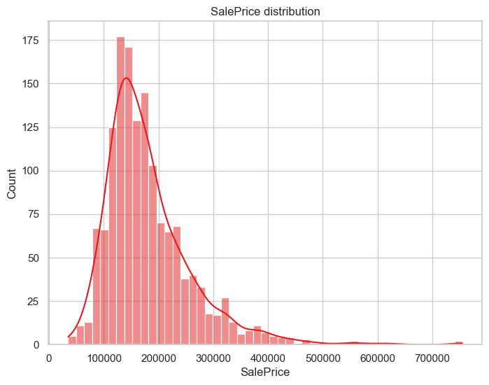
明显是左偏分布、尖峰长尾
skew = eda_data['SalePrice'].skew()
kurt = eda_data['SalePrice'].kurt()
print(f'SalePrice: skew {skew}, kurt {kurt}')
SalePrice: skew 1.8828757597682129, kurt 6.536281860064529
数值特征与SalePrice相关性#
所有数值包括 定序特征
eda_data.select_dtypes(include=['number']).columns
Index(['LotFrontage', 'LotArea', 'OverallQual', 'OverallCond', 'YearBuilt',
'YearRemodAdd', 'MasVnrArea', 'ExterQual', 'BsmtQual', 'BsmtCond',
'BsmtFinType1', 'BsmtFinSF1', 'BsmtFinType2', 'BsmtFinSF2', 'BsmtUnfSF',
'TotalBsmtSF', 'HeatingQC', '1stFlrSF', '2ndFlrSF', 'LowQualFinSF',
'GrLivArea', 'BsmtFullBath', 'BsmtHalfBath', 'FullBath', 'HalfBath',
'BedroomAbvGr', 'KitchenAbvGr', 'KitchenQual', 'TotRmsAbvGrd',
'Fireplaces', 'FireplaceQu', 'GarageYrBlt', 'GarageCars', 'GarageArea',
'GarageQual', 'GarageCond', 'WoodDeckSF', 'OpenPorchSF',
'EnclosedPorch', '3SsnPorch', 'ScreenPorch', 'PoolArea', 'PoolQC',
'Fence', 'MiscVal', 'MoSold', 'YrSold', 'SalePrice'],
dtype='object')
plt.figure(figsize=(15, 12))
corrs = eda_data.corr(numeric_only=True)
sns.heatmap(data=corrs)
<Axes: >
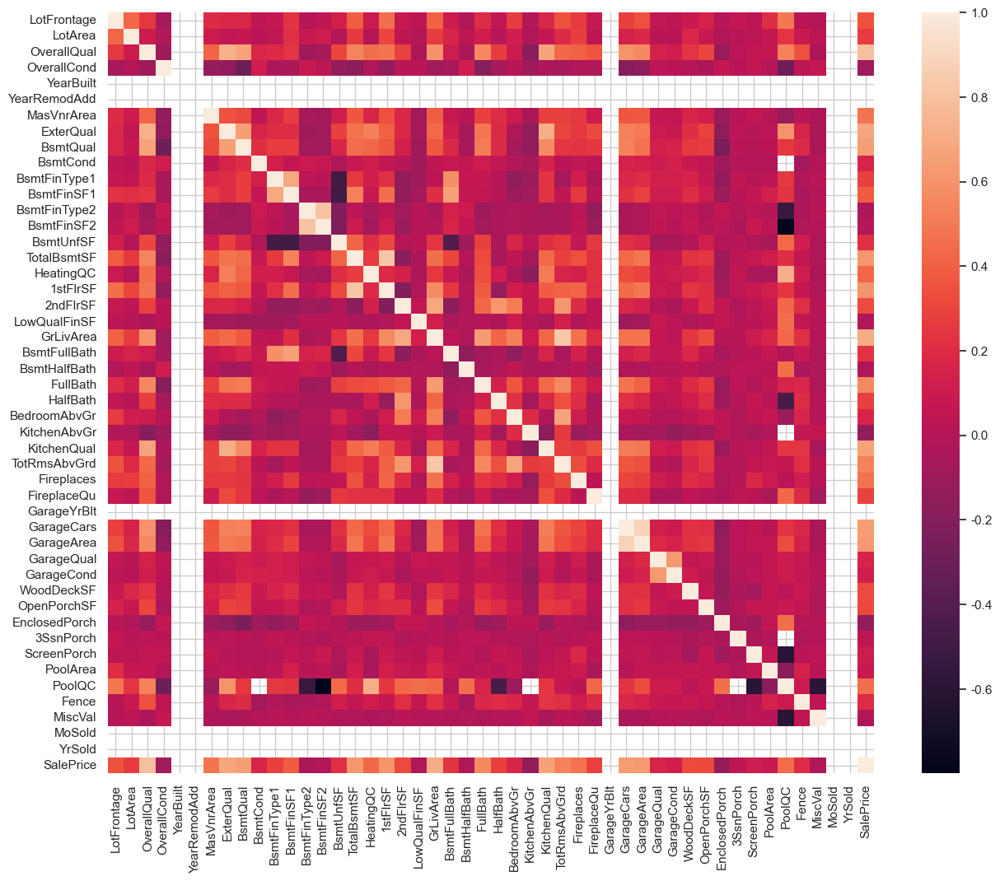
明显地，黄色方块
有几个高度共线特征
SalePrice的几个相关特征：GrLivArea,OverallQual..
着重看下与SalePrice几个高相关特征
high10_cols = corrs.nlargest(10, 'SalePrice').index.tolist()
high10_corrs = eda_data[high10_cols].corr()
plt.figure(figsize=(8,6))
sns.heatmap(data=high10_corrs, annot=True)
plt.show()
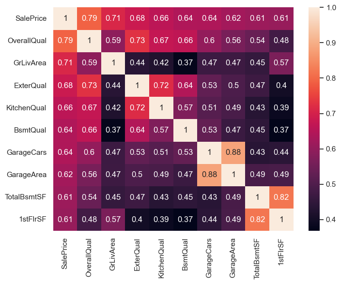
理解下这几个特征：
OverallQual 房屋装潢很重要！
GrLivArea 地上楼层活动面积，
GarageCars 车位数，GarageArea 车库面积 。 这两个是共线强相关的~
TotalBsmtSF 地下室面积，1stFlrSF 一层面积。 这两个是共线强相关的~
FullBath 地上楼层带有洗澡全设施的数量！！
ExterQual
KitchenQual
BsmtQual
cols = ['SalePrice','OverallQual','GrLivArea','ExterQual','KitchenQual','TotalBsmtSF','GarageCars']
ax = sns.pairplot(data=eda_data[cols])
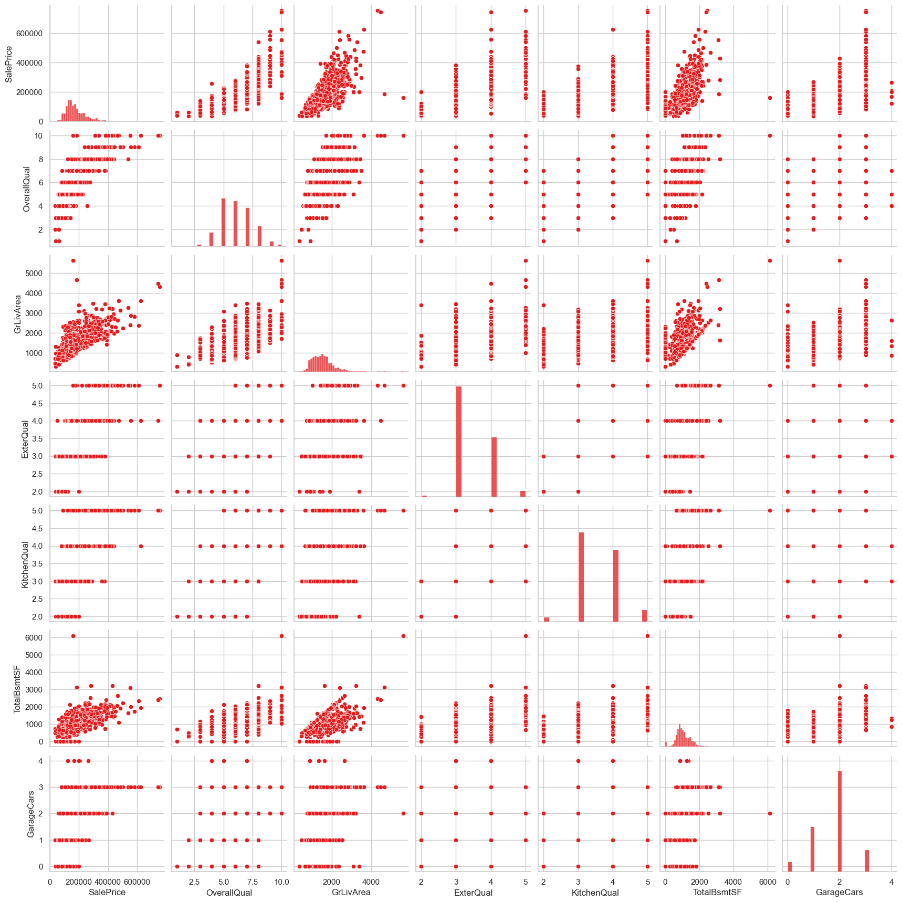
发现：
有一些很像边界的线： 比如TotalBsmtSF 总是小于GrLivArea这是合理的，地上楼层活动面积大于地下室面积
随着建筑年限靠近，价格指数级上升
plt.figure(figsize=(10,6))
ax = sns.boxplot(data=eda_data, x= 'YearBuilt', y='SalePrice')
plt.xticks(rotation=90)
plt.tight_layout()
plt.show()
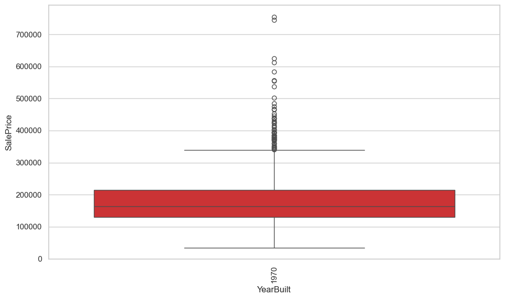
分类特征与目标ANOVA#
如何在这么多特征找到那些关键特征？？
我们通过ANOVA(方差分析)，F统计量检验来找一些关键特征
eda_data.select_dtypes(include=['object', 'category']).columns
Index(['MSSubClass', 'MSZoning', 'Street', 'Alley', 'LotShape', 'LandContour',
'Utilities', 'LotConfig', 'LandSlope', 'Neighborhood', 'Condition1',
'Condition2', 'BldgType', 'HouseStyle', 'RoofStyle', 'RoofMatl',
'Exterior1st', 'Exterior2nd', 'MasVnrType', 'ExterCond', 'Foundation',
'BsmtExposure', 'Heating', 'CentralAir', 'Electrical', 'Functional',
'GarageType', 'GarageFinish', 'PavedDrive', 'MiscFeature', 'SaleType',
'SaleCondition'],
dtype='object')
def stat_category_features(df, n_high = 10):
cols = df.select_dtypes(include=['object', 'category']).columns
le = LabelEncoder()
y = df[['SalePrice']]
X = pd.DataFrame()
for col in cols:
X[col] = le.fit_transform(df[col])
f_stats, p_values = f_regression(X = X, y=y)
result = pd.DataFrame(index=X.columns)
result['f_score'] = f_stats
result['p_value'] = p_values
return result
result = stat_category_features(eda_data)
no_imp_category_features = result[result['p_value'] > 0.05].index
no_imp_category_features
Index(['Street', 'LandContour', 'Utilities', 'LandSlope', 'Condition2'], dtype='object')
对于$p>0.05$的特征，我们认为F统计量是不可信的随机的。即分类对价格影响是随机的，可以删除
fig, axes = plt.subplots(2,3, figsize=(15, 10))
axes = axes.flatten()
for i, col in enumerate(no_imp_category_features):
sns.boxplot(data=eda_data, x=col, y='SalePrice', ax = axes[i])
sns.stripplot(data=eda_data, x=col, y='SalePrice', ax=axes[i], alpha=0.5)
plt.tight_layout()
plt.show()
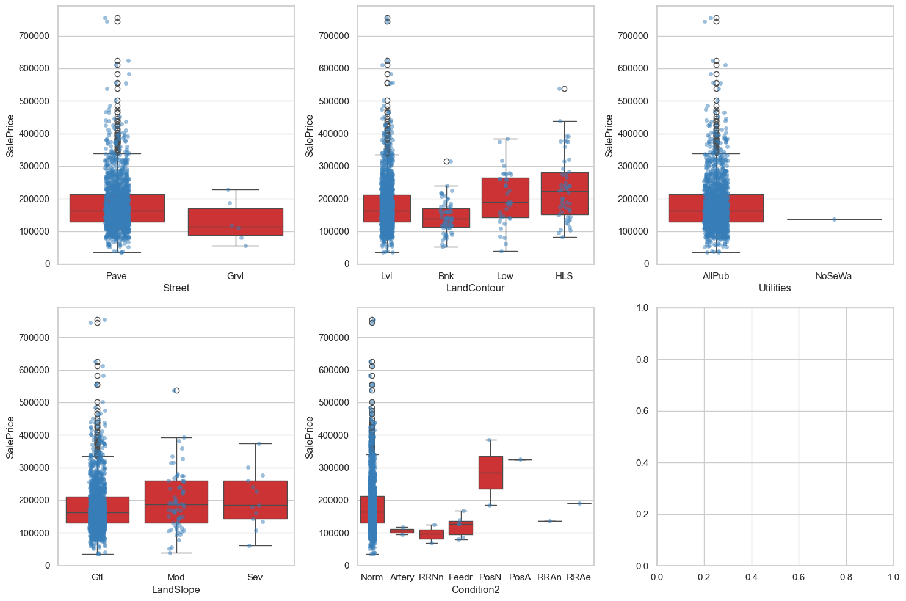
确实地，可以看到，这些特征几乎都只用了一个类别！
我们来看下找到的前几个关键特征
result[result['p_value'] < 0.05].sort_values(by='f_score',ascending=False).head(9)
| f_score | p_value | |
|---|---|---|
| GarageFinish | 629.844106 | 7.922769e-116 |
| GarageType | 303.848427 | 5.866699e-62 |
| Foundation | 249.840256 | 4.579866e-52 |
| BsmtExposure | 153.953618 | 1.112827e-33 |
| MasVnrType | 125.530544 | 5.231103e-28 |
| LotShape | 101.893942 | 3.320712e-23 |
| CentralAir | 98.305344 | 1.809506e-22 |
| Electrical | 85.006587 | 1.008341e-19 |
| PavedDrive | 82.454424 | 3.418340e-19 |
imp_category_features = result[result['p_value'] < 0.05].sort_values(by='f_score',ascending=False).head(9).index
imp_category_features
Index(['GarageFinish', 'GarageType', 'Foundation', 'BsmtExposure',
'MasVnrType', 'LotShape', 'CentralAir', 'Electrical', 'PavedDrive'],
dtype='object')
fig, axes = plt.subplots(3,3, figsize=(15, 10), sharey=True)
axes = axes.flatten()
for i, col in enumerate(imp_category_features):
sns.boxplot(data=eda_data, x=col, y='SalePrice', ax=axes[i])
sns.stripplot(data=eda_data, x=col, y='SalePrice', ax=axes[i], alpha=0.5)
plt.tight_layout()
plt.show()
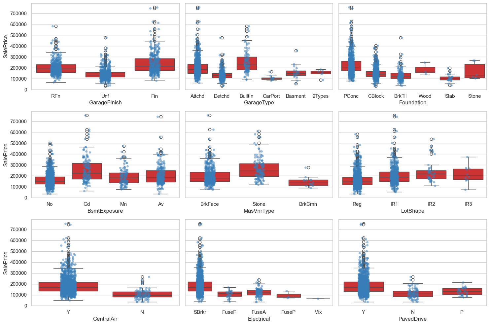
确实的，都有着不错的效果~😊
一些特别的（后续训练出现的）
result[result.index == 'MSZoning']
| f_score | p_value | |
|---|---|---|
| MSZoning | 41.762896 | 1.401300e-10 |
sns.boxplot(data=eda_data, x='MSZoning', y='SalePrice')
<Axes: xlabel='MSZoning', ylabel='SalePrice'>
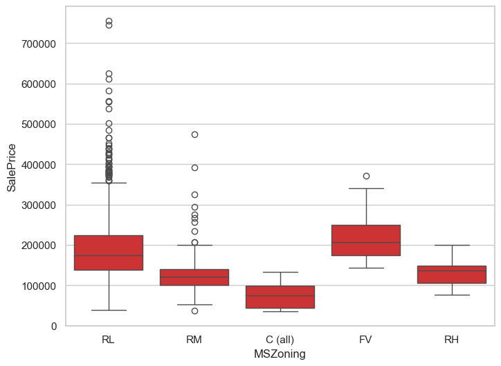
missing#
先处理缺失值
缺失的程度
缺失是否有规律？还是人为异常？
total = eda_data.isnull().sum()
percent = eda_data.isnull().sum() / eda_data.shape[0]
missing_data = pd.concat([total, percent], axis=1, keys=['total', 'percent'])
missing_data.sort_values(by='percent', ascending=False).head()
| total | percent | |
|---|---|---|
| PoolQC | 1453 | 0.995205 |
| MiscFeature | 1406 | 0.963014 |
| Alley | 1369 | 0.937671 |
| Fence | 1179 | 0.807534 |
| MasVnrType | 872 | 0.597260 |
missing_data[missing_data['percent'] > 0.15]
| total | percent | |
|---|---|---|
| LotFrontage | 259 | 0.177397 |
| Alley | 1369 | 0.937671 |
| MasVnrType | 872 | 0.597260 |
| FireplaceQu | 690 | 0.472603 |
| PoolQC | 1453 | 0.995205 |
| Fence | 1179 | 0.807534 |
| MiscFeature | 1406 | 0.963014 |
缺失比例大于15%，我们考虑删除特征:
主要都是质量材料相关的缺失，应该不重要，可以删除
missing_data[(missing_data['percent'] <= 0.15) & (missing_data['percent'] >0)]
| total | percent | |
|---|---|---|
| MasVnrArea | 8 | 0.005479 |
| BsmtQual | 37 | 0.025342 |
| BsmtCond | 37 | 0.025342 |
| BsmtExposure | 38 | 0.026027 |
| BsmtFinType1 | 37 | 0.025342 |
| BsmtFinType2 | 38 | 0.026027 |
| Electrical | 1 | 0.000685 |
| GarageType | 81 | 0.055479 |
| GarageYrBlt | 81 | 0.055479 |
| GarageFinish | 81 | 0.055479 |
| GarageQual | 81 | 0.055479 |
| GarageCond | 81 | 0.055479 |
对于缺失小于15%的，
Bsmt 有相关的 TotalBsmtSF 表示。 删除特征
Garage 有相关的 GarageCars。 删除特征
Electrical删除行就可
eda_data[eda_data['Electrical'].isnull()].index
Index([1380], dtype='int64', name='Id')
eda_data = eda_data.drop(index=eda_data[eda_data['Electrical'].isnull()].index,axis=0)
traindata = traindata.drop(index=eda_data[eda_data['Electrical'].isnull()].index,axis=0)
missing_remove_num_cols = {'MasVnrArea'}
missing_remove_cat_cols = {'Alley', 'MasVnrType', 'Fence', 'MiscFeature','GarageType', 'GarageFinish'}
missing_remove_ord_cols = {'PoolQC', 'FireplaceQu','BsmtQual','BsmtCond','BsmtExposure', 'BsmtFinType1','BsmtFinType2', 'GarageQual', 'GarageCond'}
eda_data['GarageYrBlt'] = eda_data['GarageYrBlt'].fillna(eda_data['YearBuilt'])
eda_data.isnull().sum().sort_values(ascending=False)
PoolQC 1452
MiscFeature 1405
Alley 1368
Fence 1178
MasVnrType 871
...
ExterCond 0
ExterQual 0
Exterior2nd 0
Exterior1st 0
SalePrice 0
Length: 80, dtype: int64
先进性粗略的填充使用median,none
异常值#
删除行：
应该聚焦于那些关键的特征！：
imp_numeric_cols =[
'OverallQual','TotalBsmtSF', 'GrLivArea','1stFlrSF'
]
imp_category_cols = [
'Foundation','LotShape', 'CentralAir','Electrical', 'PavedDrive'
]
关于离群异常点的定义，不能使用简单的IQR，很多数值特征都是长尾的，所需需要log变换
目标异常#
eda_data['SalePrice_log'] = np.log1p(eda_data['SalePrice'])
fig, (ax1,ax2) = plt.subplots(1,2, figsize=(10,4))
sns.histplot(data=eda_data, x='SalePrice_log', kde=True, ax=ax1)
sns.boxplot(data=eda_data, x='SalePrice_log', ax=ax2)
plt.tight_layout()
plt.show()
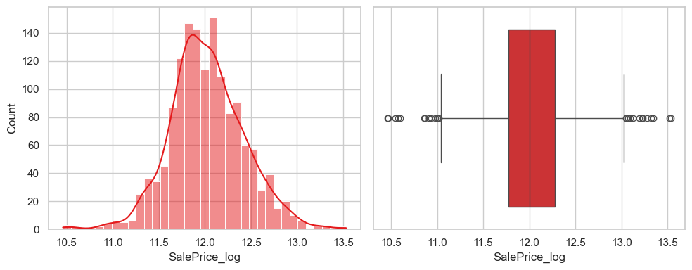
双变量异常#
散点异常：删除点
eda_data[imp_numeric_cols]
| OverallQual | TotalBsmtSF | GrLivArea | 1stFlrSF | |
|---|---|---|---|---|
| Id | ||||
| 1 | 7 | 856 | 1710 | 856 |
| 2 | 6 | 1262 | 1262 | 1262 |
| 3 | 7 | 920 | 1786 | 920 |
| 4 | 7 | 756 | 1717 | 961 |
| 5 | 8 | 1145 | 2198 | 1145 |
| ... | ... | ... | ... | ... |
| 1456 | 6 | 953 | 1647 | 953 |
| 1457 | 6 | 1542 | 2073 | 2073 |
| 1458 | 7 | 1152 | 2340 | 1188 |
| 1459 | 5 | 1078 | 1078 | 1078 |
| 1460 | 5 | 1256 | 1256 | 1256 |
1459 rows × 4 columns
fig,axes = plt.subplots(1,4, figsize=(15,4))
axes = axes.flatten()
for i,col in enumerate(imp_numeric_cols):
sns.scatterplot(data=eda_data, x=col, y='SalePrice', ax = axes[i])
plt.tight_layout()
plt.show()
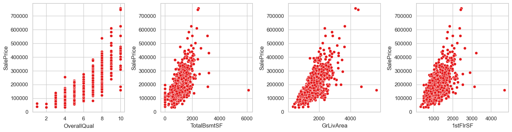
有一些离群点
eda_data[(eda_data['GrLivArea']>4000) & (eda_data['SalePrice']<200000)]
| MSSubClass | MSZoning | LotFrontage | LotArea | Street | Alley | LotShape | LandContour | Utilities | LotConfig | ... | PoolQC | Fence | MiscFeature | MiscVal | MoSold | YrSold | SaleType | SaleCondition | SalePrice | SalePrice_log | |
|---|---|---|---|---|---|---|---|---|---|---|---|---|---|---|---|---|---|---|---|---|---|
| Id | |||||||||||||||||||||
| 524 | 60 | RL | 130.0 | 40094 | Pave | NaN | IR1 | Bnk | AllPub | Inside | ... | NaN | NaN | NaN | 0 | 1 | 1970 | New | Partial | 184750 | 12.126764 |
| 1299 | 60 | RL | 313.0 | 63887 | Pave | NaN | IR3 | Bnk | AllPub | Corner | ... | 4.0 | NaN | NaN | 0 | 1 | 1970 | New | Partial | 160000 | 11.982935 |
2 rows × 81 columns
eda_data[eda_data['TotalBsmtSF']>5000]
| MSSubClass | MSZoning | LotFrontage | LotArea | Street | Alley | LotShape | LandContour | Utilities | LotConfig | ... | PoolQC | Fence | MiscFeature | MiscVal | MoSold | YrSold | SaleType | SaleCondition | SalePrice | SalePrice_log | |
|---|---|---|---|---|---|---|---|---|---|---|---|---|---|---|---|---|---|---|---|---|---|
| Id | |||||||||||||||||||||
| 1299 | 60 | RL | 313.0 | 63887 | Pave | NaN | IR3 | Bnk | AllPub | Corner | ... | 4.0 | NaN | NaN | 0 | 1 | 1970 | New | Partial | 160000 | 11.982935 |
1 rows × 81 columns
fig, axes = plt.subplots(len(imp_category_cols), 2, figsize=(16, 4 * len(imp_category_cols)))
for i, col in enumerate(imp_category_cols):
sns.boxplot(data=eda_data, x='SalePrice_log', y=col, ax=axes[i, 0])
sns.stripplot(data=eda_data, x='SalePrice_log', y=col, ax=axes[i, 0], alpha=0.4)
sns.boxplot(data=eda_data, x='SalePrice', y=col, ax=axes[i, 1])
sns.stripplot(data=eda_data, x='SalePrice', y=col, ax=axes[i, 1], alpha=0.4)
plt.tight_layout()
plt.show()
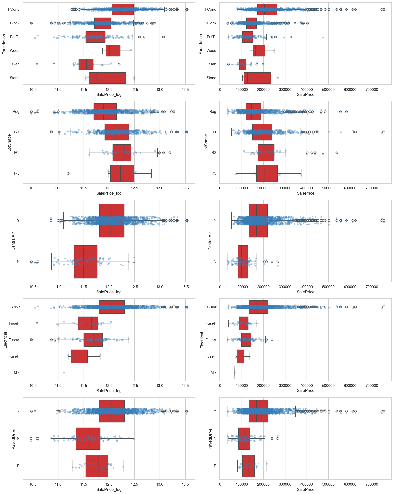
eda_data[(eda_data['Foundation'] == 'PConc') & (eda_data['SalePrice'] > 700000)]
| MSSubClass | MSZoning | LotFrontage | LotArea | Street | Alley | LotShape | LandContour | Utilities | LotConfig | ... | PoolQC | Fence | MiscFeature | MiscVal | MoSold | YrSold | SaleType | SaleCondition | SalePrice | SalePrice_log | |
|---|---|---|---|---|---|---|---|---|---|---|---|---|---|---|---|---|---|---|---|---|---|
| Id | |||||||||||||||||||||
| 692 | 60 | RL | 104.0 | 21535 | Pave | NaN | IR1 | Lvl | AllPub | Corner | ... | NaN | NaN | NaN | 0 | 1 | 1970 | WD | Normal | 755000 | 13.534474 |
| 1183 | 60 | RL | 160.0 | 15623 | Pave | NaN | IR1 | Lvl | AllPub | Corner | ... | 5.0 | 3.0 | NaN | 0 | 1 | 1970 | WD | Abnorml | 745000 | 13.521141 |
2 rows × 81 columns
eda_data[(eda_data['Foundation'] == 'BrkTil') & (eda_data['SalePrice'] > 400000)]
| MSSubClass | MSZoning | LotFrontage | LotArea | Street | Alley | LotShape | LandContour | Utilities | LotConfig | ... | PoolQC | Fence | MiscFeature | MiscVal | MoSold | YrSold | SaleType | SaleCondition | SalePrice | SalePrice_log | |
|---|---|---|---|---|---|---|---|---|---|---|---|---|---|---|---|---|---|---|---|---|---|
| Id | |||||||||||||||||||||
| 186 | 75 | RM | 90.0 | 22950 | Pave | NaN | IR2 | Lvl | AllPub | Inside | ... | NaN | 4.0 | NaN | 0 | 1 | 1970 | WD | Normal | 475000 | 13.071072 |
1 rows × 81 columns
eda_data[(eda_data['LotShape'] == 'IR1') & (eda_data['SalePrice'] > 700000)]
| MSSubClass | MSZoning | LotFrontage | LotArea | Street | Alley | LotShape | LandContour | Utilities | LotConfig | ... | PoolQC | Fence | MiscFeature | MiscVal | MoSold | YrSold | SaleType | SaleCondition | SalePrice | SalePrice_log | |
|---|---|---|---|---|---|---|---|---|---|---|---|---|---|---|---|---|---|---|---|---|---|
| Id | |||||||||||||||||||||
| 692 | 60 | RL | 104.0 | 21535 | Pave | NaN | IR1 | Lvl | AllPub | Corner | ... | NaN | NaN | NaN | 0 | 1 | 1970 | WD | Normal | 755000 | 13.534474 |
| 1183 | 60 | RL | 160.0 | 15623 | Pave | NaN | IR1 | Lvl | AllPub | Corner | ... | 5.0 | 3.0 | NaN | 0 | 1 | 1970 | WD | Abnorml | 745000 | 13.521141 |
2 rows × 81 columns
剔除异常行#
dropids = [524, 1299, 692, 1183,186]
# 来自model训练后的离散点分析，如需复现这几个ids，请注释掉，然后查看model分析
dropids.append(441)
dropids.extend([971, 89, 689])
eda_data = eda_data.drop(dropids, axis=0)
traindata = traindata.drop(dropids, axis=0)
log变换#
log 减小了远端大值误差。 增大了近端小值误差。 结果就是：远端不离群了，小端更加离群了
sns.histplot(eda_data, x='TotalBsmtSF',kde=True)
<Axes: xlabel='TotalBsmtSF', ylabel='Count'>
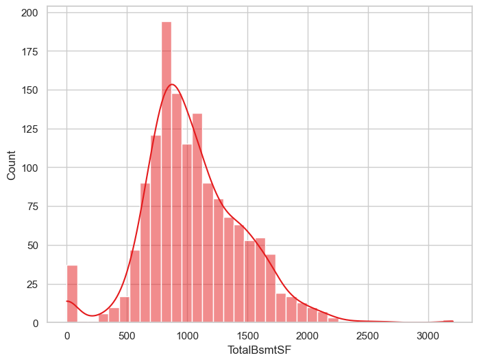
TotalBsmtSF = 0 值太多。 这代表没有地下室。 我们不能对0做log变换
远端有离群点
为此，我们需要创建一个特征，为了0值。只对非0值做转换
eda_data['HasBsmt'] = 1
eda_data['HasBsmt'][eda_data[eda_data['TotalBsmtSF'] == 0].index] = 0
eda_data.loc[eda_data['HasBsmt']==1, 'TotalBsmtSF'] = np.log(eda_data.loc[eda_data['HasBsmt']==1, 'TotalBsmtSF'])
sns.histplot(eda_data[eda_data['HasBsmt'] == 1], x='TotalBsmtSF',kde=True)
<Axes: xlabel='TotalBsmtSF', ylabel='Count'>
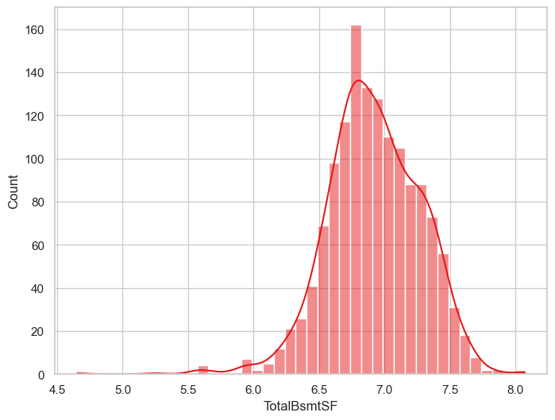
Gauss-Markon假设#
误差同方差#
这里是不严谨的，应该是n维超线性空间的误差。
但是如果误差方差依赖了某个特征，那么就会波动，不恒定。
ax = sns.regplot(eda_data[eda_data['HasBsmt'] == 1], x='TotalBsmtSF', y='SalePrice')
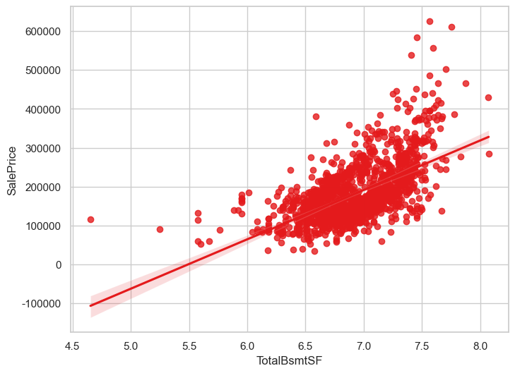
以TotalBsmtSF特征而言，每个x值，y分布沿着回归线一致，即方差不变
误差正态假设#
为了后续显著性检验
误差，y，$\beta$ 是正态的
fig, (ax1, ax2) = plt.subplots(1,2, figsize=(10,4))
sns.histplot(data=eda_data, x='SalePrice',kde=True, ax= ax1)
res = stats.probplot(eda_data['SalePrice'], plot=ax2)
plt.tight_layout()
plt.show()
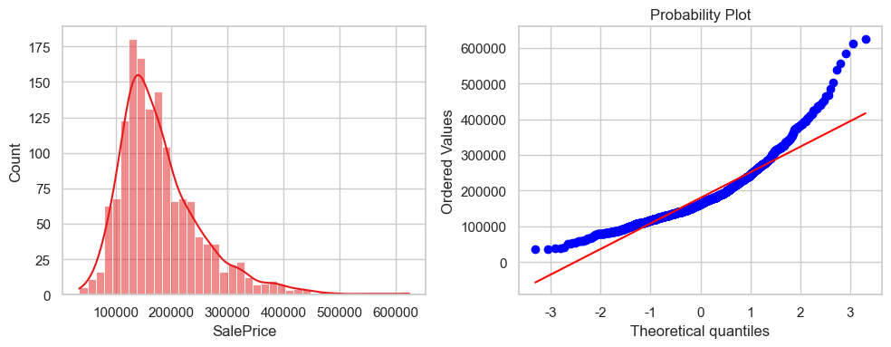
数据向上弯表示右偏，红线为正态分布
通过log变换让他更像正态分布
eda_data['SalePrice_log'] = np.log(eda_data['SalePrice'])
fig, (ax1, ax2) = plt.subplots(1,2, figsize=(10,4))
sns.histplot(data=eda_data, x='SalePrice_log',kde=True, ax= ax1)
res = stats.probplot(eda_data['SalePrice_log'], plot=ax2)
plt.tight_layout()
plt.show()
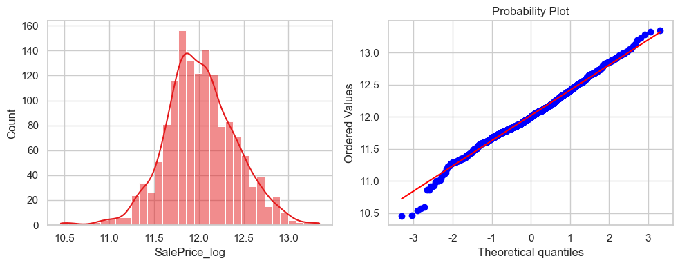
Warning
下面train和test同步
特征选择#
对列进行增加，删除，构建新特征
应该阐述我构造的思想~
有些特征与目标也不是线性关系，也得非线性转换
对于线性构造方法，旨在创造一些更具有解释意义的特征，但必须之后删除一些特征，保证满秩。
对于非线性构造方法，旨在捕捉隐藏特征，提高模型上限，
date数据类型可以转为pd.datetime
1. 年份#
年份本身可以是变量，能够表明某些年份房价波动
年份构造的age抵消了时间背景，表示age对房价也有波动
探索一下
eda_data['HouseAge'] = eda_data['YrSold'] -eda_data['YearBuilt']
fig, axes = plt.subplots(1, 3, figsize=(15,4))
sns.regplot(data=eda_data, x='YearBuilt', y = 'SalePrice', ax=axes[0])
sns.regplot(data=eda_data, x='HouseAge', y = 'SalePrice', ax=axes[1])
sns.regplot(data=eda_data, x='YrSold', y = 'SalePrice', ax=axes[2])
plt.tight_layout()
plt.show()
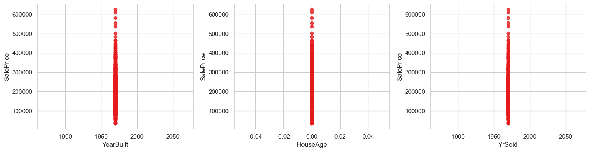
eda_data[['YearBuilt', 'HouseAge']].corr()
| YearBuilt | HouseAge | |
|---|---|---|
| YearBuilt | NaN | NaN |
| HouseAge | NaN | NaN |
图中表明，YrSold 对于构造HouseAge影响不大。也因此，相关性大。
结论：不构造HouseAge, 删除YrSold, 保留YearBuilt
2. 房屋面积#
eda_data['TotalSF'] = eda_data['1stFlrSF'] + eda_data['2ndFlrSF'] + eda_data['TotalBsmtSF']
fig, axes = plt.subplots(1, 4, figsize=(15,4))
axes = axes.flatten()
sns.regplot(data=eda_data, x='TotalSF', y = 'SalePrice', ax=axes[0])
sns.regplot(data=eda_data, x='1stFlrSF', y = 'SalePrice', ax=axes[1])
sns.regplot(data=eda_data, x='2ndFlrSF', y = 'SalePrice', ax=axes[2])
sns.regplot(data=eda_data, x='TotalBsmtSF', y = 'SalePrice', ax=axes[3])
plt.tight_layout()
plt.show()
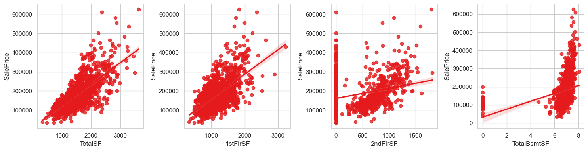
eda_data[['TotalSF', '1stFlrSF', '2ndFlrSF', 'TotalBsmtSF']].corr()
| TotalSF | 1stFlrSF | 2ndFlrSF | TotalBsmtSF | |
|---|---|---|---|---|
| TotalSF | 1.000000 | 0.527859 | 0.687724 | 0.185774 |
| 1stFlrSF | 0.527859 | 1.000000 | -0.253567 | 0.268795 |
| 2ndFlrSF | 0.687724 | -0.253567 | 1.000000 | -0.020634 |
| TotalBsmtSF | 0.185774 | 0.268795 | -0.020634 | 1.000000 |
结论：删除1stFlrSF, 保留TotalSF
3. 房屋面积*质量评分#
eda_data['HouseSF_PRODUCT_QUAL'] = eda_data['TotalSF'] * eda_data['OverallQual']
fig, axes = plt.subplots(1, 3, figsize=(12,4))
axes = axes.flatten()
sns.regplot(data=eda_data, x='TotalSF', y = 'SalePrice', ax=axes[0])
sns.regplot(data=eda_data, x='OverallQual', y = 'SalePrice', ax=axes[1])
sns.regplot(data=eda_data, x='HouseSF_PRODUCT_QUAL', y = 'SalePrice', ax=axes[2])
plt.tight_layout()
plt.show()
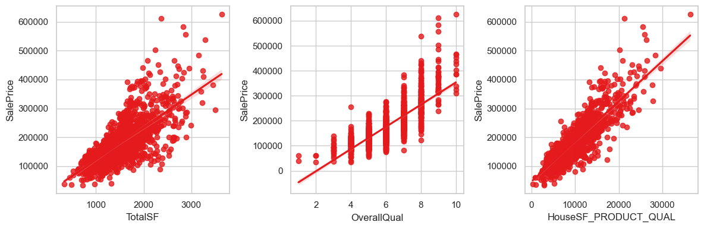
eda_data[['HouseSF_PRODUCT_QUAL', 'OverallQual', 'TotalSF', 'SalePrice']].corr()
| HouseSF_PRODUCT_QUAL | OverallQual | TotalSF | SalePrice | |
|---|---|---|---|---|
| HouseSF_PRODUCT_QUAL | 1.000000 | 0.829884 | 0.921501 | 0.869864 |
| OverallQual | 0.829884 | 1.000000 | 0.588959 | 0.798928 |
| TotalSF | 0.921501 | 0.588959 | 1.000000 | 0.730945 |
| SalePrice | 0.869864 | 0.798928 | 0.730945 | 1.000000 |
可以看到，我们构造的特征对房价有更高的相关性
结论：保留HouseSF_PRODUCT_QUAL
pipeline#
ft pipeline#
结合了eda和特征选择两部分。对列进行修改
def ft_features(df):
"""
"""
df['MSSubClass'] = df['MSSubClass'].astype('category')
df['HasBsmt'] = 1
df['HasBsmt'][df[df['TotalBsmtSF'] == 0].index] = 0
df['TotalSF'] = df['1stFlrSF'] + df['2ndFlrSF'] + df['TotalBsmtSF']
df['HouseSF_PRODUCT_QUAL'] = df['TotalSF'] * df['OverallQual']
df['GarageYrBlt'] = df['GarageYrBlt'].fillna(df['YearBuilt'])
date_cols = ['GarageYrBlt','YearRemodAdd', 'YearBuilt', 'MoSold']
df[date_cols] = df[date_cols].astype('datetime64[us]')
df['GarageYrBlt'] = df['GarageYrBlt'].dt.year
df['YearRemodAdd'] = df['YearRemodAdd'].dt.year
df['YearBuilt'] = df['YearBuilt'].dt.year
df['MoSold'] = df['MoSold'].dt.month
cols_to_remove = [
'1stFlrSF', 'YrSold',
*missing_remove_num_cols,
*missing_remove_cat_cols,
*missing_remove_ord_cols,
*no_imp_category_features,
]
remaining_features = [f for f in df.columns if f not in cols_to_remove]
df = df[remaining_features]
print(f'feature_features transformer done. ')
return df
def ft_feature_names_out(transformer, input_features):
cols_to_remove = [
'1stFlrSF', 'YrSold',
*missing_remove_num_cols,
*missing_remove_cat_cols,
*missing_remove_ord_cols,
*no_imp_category_features,
]
remaining_features = [f for f in input_features if f not in cols_to_remove]
new_cols = ['HasBsmt', 'TotalSF', 'HouseSF_PRODUCT_QUAL']
for col in new_cols:
if col not in remaining_features:
remaining_features.append(col)
return remaining_features
ft_pipeline = Pipeline([
('ft_features', FunctionTransformer(func=ft_features, feature_names_out=ft_feature_names_out))
])
date pipeline#
def to_int_type(df):
return df.astype(int)
date_pipeline = Pipeline(steps=[
('imputer', SimpleImputer(strategy='median')),
])
date_pipeline.set_output(transform="pandas") # 配置每步输出df，而不是np arr
Pipeline(steps=[('imputer', SimpleImputer(strategy='median'))])In a Jupyter environment, please rerun this cell to show the HTML representation or trust the notebook. On GitHub, the HTML representation is unable to render, please try loading this page with nbviewer.org.
Parameters
| steps | [('imputer', ...)] | |
| transform_input | None | |
| memory | None | |
| verbose | False |
Parameters
| missing_values | nan | |
| strategy | 'median' | |
| fill_value | None | |
| copy | True | |
| add_indicator | False | |
| keep_empty_features | False |
numeric pipeline#
numeric_pipeline = Pipeline(steps=[
('imputer', SimpleImputer(strategy='median')), # 填充缺失值
('log_transform', FunctionTransformer(np.log1p, validate=False, feature_names_out="one-to-one")), # 取对数
('std_scaler', StandardScaler()) # 标准化
])
numeric_pipeline.set_output(transform="pandas") # 配置每步输出df，而不是np arr
Pipeline(steps=[('imputer', SimpleImputer(strategy='median')),
('log_transform',
FunctionTransformer(feature_names_out='one-to-one',
func=<ufunc 'log1p'>)),
('std_scaler', StandardScaler())])In a Jupyter environment, please rerun this cell to show the HTML representation or trust the notebook. On GitHub, the HTML representation is unable to render, please try loading this page with nbviewer.org.
Parameters
| steps | [('imputer', ...), ('log_transform', ...), ...] | |
| transform_input | None | |
| memory | None | |
| verbose | False |
Parameters
| missing_values | nan | |
| strategy | 'median' | |
| fill_value | None | |
| copy | True | |
| add_indicator | False | |
| keep_empty_features | False |
Parameters
| func | <ufunc 'log1p'> | |
| inverse_func | None | |
| validate | False | |
| accept_sparse | False | |
| check_inverse | True | |
| feature_names_out | 'one-to-one' | |
| kw_args | None | |
| inv_kw_args | None |
Parameters
| copy | True | |
| with_mean | True | |
| with_std | True |
category pipeline#
categorical_pipeline = Pipeline(steps=[
('onehot_encoder', OneHotEncoder(handle_unknown='ignore',sparse_output=False)) # 使用 OneHotEncoder
])
categorical_pipeline.set_output(transform="pandas") # 配置每步输出df，而不是np arr
Pipeline(steps=[('onehot_encoder',
OneHotEncoder(handle_unknown='ignore', sparse_output=False))])In a Jupyter environment, please rerun this cell to show the HTML representation or trust the notebook. On GitHub, the HTML representation is unable to render, please try loading this page with nbviewer.org.
Parameters
| steps | [('onehot_encoder', ...)] | |
| transform_input | None | |
| memory | None | |
| verbose | False |
Parameters
| categories | 'auto' | |
| drop | None | |
| sparse_output | False | |
| dtype | <class 'numpy.float64'> | |
| handle_unknown | 'ignore' | |
| min_frequency | None | |
| max_categories | None | |
| feature_name_combiner | 'concat' |
ordinal pipeline#
def fix_map_encoder(df):
df['OverallQual'] = df['OverallQual'].fillna(0)
df['OverallCond'] = df['OverallCond'].fillna(0)
df['ExterCond'] = df['ExterCond'].fillna('NA').map({'Ex': 5, 'Gd': 4, 'TA': 3, 'Fa': 2, 'Po': 1, 'NA': 0}).fillna(0)
df['ExterQual'] = df['ExterQual'].fillna('NA').map({'Ex': 5, 'Gd': 4, 'TA': 3, 'Fa': 2, 'Po': 1, 'NA': 0}).fillna(0)
df['KitchenQual'] = df['KitchenQual'].fillna('NA').map({'Ex': 5, 'Gd': 4, 'TA': 3, 'Fa': 2, 'Po': 1, 'NA': 0}).fillna(0)
df['HeatingQC'] = df['HeatingQC'].fillna('NA').map({'Ex': 5, 'Gd': 4, 'TA': 3, 'Fa': 2, 'Po': 1, 'NA': 0}).fillna(0)
print('fix_map_encoder transformer done.')
return df.astype(int)
# 对有序类别进行编码
ordinal_pipeline = Pipeline(steps=[
('fix_map_encoder', FunctionTransformer(fix_map_encoder, feature_names_out='one-to-one')),
])
ordinal_pipeline.set_output(transform="pandas") # 配置每步输出df，而不是np arr
Pipeline(steps=[('fix_map_encoder',
FunctionTransformer(feature_names_out='one-to-one',
func=<function fix_map_encoder at 0x00000249C6686440>))])In a Jupyter environment, please rerun this cell to show the HTML representation or trust the notebook. On GitHub, the HTML representation is unable to render, please try loading this page with nbviewer.org.
Parameters
| steps | [('fix_map_encoder', ...)] | |
| transform_input | None | |
| memory | None | |
| verbose | False |
Parameters
| func | <function fix...00249C6686440> | |
| inverse_func | None | |
| validate | False | |
| accept_sparse | False | |
| check_inverse | True | |
| feature_names_out | 'one-to-one' | |
| kw_args | None | |
| inv_kw_args | None |
baseline#
训练#
ft_pipeline完成后会确定所有特征
numeric_cols = ['LotFrontage','LotArea','BsmtFinSF1','BsmtFinSF2','BsmtUnfSF','TotalBsmtSF',
'2ndFlrSF','LowQualFinSF','GrLivArea','GarageArea',
'WoodDeckSF','OpenPorchSF','EnclosedPorch','3SsnPorch','ScreenPorch','PoolArea',
'MiscVal','BsmtFullBath','BsmtHalfBath','FullBath','HalfBath','BedroomAbvGr',
'KitchenAbvGr','TotRmsAbvGrd','Fireplaces','GarageCars','HasBsmt', 'TotalSF', 'HouseSF_PRODUCT_QUAL']
categorical_cols = ['MSSubClass','CentralAir','MSZoning','LotShape','LotConfig',
'Neighborhood','Condition1','BldgType','HouseStyle','RoofStyle','RoofMatl','Exterior1st',
'Exterior2nd','Foundation','Heating','Electrical','Functional',
'PavedDrive','SaleType','SaleCondition'
]
date_cols = ['GarageYrBlt','YearRemodAdd','YearBuilt','MoSold' ]
ordinal_cols = ['OverallQual','OverallCond','ExterQual', 'ExterCond',
'HeatingQC', 'KitchenQual']
len(numeric_cols) + len(date_cols) + len(categorical_cols) + len(ordinal_cols)
59
sub_preprocessor = ColumnTransformer(
transformers = [
('date',date_pipeline, date_cols),
('numeric', numeric_pipeline, numeric_cols), # 数值型处理
('ordianl', ordinal_pipeline, ordinal_cols), # 有序类别处理
('categoric', categorical_pipeline, categorical_cols) # 无序类别处理
],
remainder='drop' # 其余列删除掉
)
preprocessor = Pipeline(
steps=[
('ft',ft_pipeline),
('sub_preprocessor',sub_preprocessor)
]
)
@contextmanager
def timer(title):
t0 = time.time()
yield
now = time.time()
print(f'{title} {(now - t0) : .2f}s')
X_train = traindata.drop(columns = ['SalePrice']).copy()
y_train = traindata[['SalePrice']].copy()
X_train, X_valid, y_train, y_valid = train_test_split(X_train, y_train, test_size=0.33,)
X_train.columns
Index(['MSSubClass', 'MSZoning', 'LotFrontage', 'LotArea', 'Street', 'Alley',
'LotShape', 'LandContour', 'Utilities', 'LotConfig', 'LandSlope',
'Neighborhood', 'Condition1', 'Condition2', 'BldgType', 'HouseStyle',
'OverallQual', 'OverallCond', 'YearBuilt', 'YearRemodAdd', 'RoofStyle',
'RoofMatl', 'Exterior1st', 'Exterior2nd', 'MasVnrType', 'MasVnrArea',
'ExterQual', 'ExterCond', 'Foundation', 'BsmtQual', 'BsmtCond',
'BsmtExposure', 'BsmtFinType1', 'BsmtFinSF1', 'BsmtFinType2',
'BsmtFinSF2', 'BsmtUnfSF', 'TotalBsmtSF', 'Heating', 'HeatingQC',
'CentralAir', 'Electrical', '1stFlrSF', '2ndFlrSF', 'LowQualFinSF',
'GrLivArea', 'BsmtFullBath', 'BsmtHalfBath', 'FullBath', 'HalfBath',
'BedroomAbvGr', 'KitchenAbvGr', 'KitchenQual', 'TotRmsAbvGrd',
'Functional', 'Fireplaces', 'FireplaceQu', 'GarageType', 'GarageYrBlt',
'GarageFinish', 'GarageCars', 'GarageArea', 'GarageQual', 'GarageCond',
'PavedDrive', 'WoodDeckSF', 'OpenPorchSF', 'EnclosedPorch', '3SsnPorch',
'ScreenPorch', 'PoolArea', 'PoolQC', 'Fence', 'MiscFeature', 'MiscVal',
'MoSold', 'YrSold', 'SaleType', 'SaleCondition'],
dtype='object')
model_lasso = Pipeline(steps=[
('preprocessor', preprocessor),
('regressor', TransformedTargetRegressor(
regressor = LassoCV(cv=20, max_iter=5000),
func = np.log1p, # y转换
inverse_func = np.expm1,
))
])
with timer('model_lasso'):
model_lasso.fit(X_train, y_train)
feature_features transformer done.
fix_map_encoder transformer done.
model_lasso 1.69s
y_train_pred = model_lasso.predict(X_train)
feature_features transformer done.
fix_map_encoder transformer done.
root_mean_squared_error(np.log(y_train_pred), np.log(y_train))
0.09871707791314763
y_valid_pred = model_lasso.predict(X_valid)
root_mean_squared_error(np.log(y_valid_pred), np.log(y_valid))
feature_features transformer done.
fix_map_encoder transformer done.
0.11064641975430012
可以看到，在训练集和验证集上，效果都不太好
模型解释#
features_names_out = model_lasso[0].get_feature_names_out()
model = model_lasso.named_steps['regressor']
lasso = model.regressor_ # 内部模型
lasso.alpha_
0.0004540549206624422
coefs = lasso.coef_
feature_coef_df = pd.DataFrame({
'feature': features_names_out,
'coef': coefs,
'coef_abs': np.abs(coefs)
})
feature_coef_df.shape
(198, 3)
(feature_coef_df['coef_abs'] == 0).sum() / len(feature_coef_df)
0.5656565656565656
有64%的特征系数为0
high20_coef_features= feature_coef_df[feature_coef_df['coef_abs'] != 0].sort_values(by='coef_abs', ascending=False).head(20)
# 条形图
sns.barplot(data=high20_coef_features, x='coef', y='feature')
<Axes: xlabel='coef', ylabel='feature'>
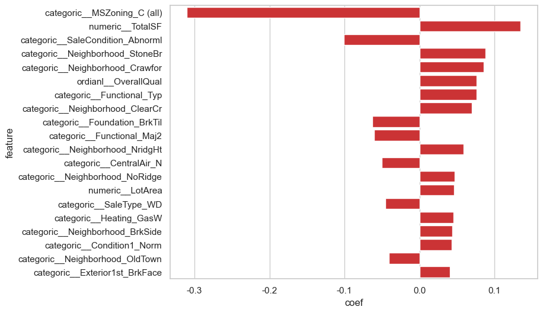
feature_coef_df[feature_coef_df['feature'] == 'categoric__SaleCondition_Abnorml']
| feature | coef | coef_abs | |
|---|---|---|---|
| 192 | categoric__SaleCondition_Abnorml | -0.100477 | 0.100477 |
feature_coef_df['feature'].to_list()
['date__GarageYrBlt',
'date__YearRemodAdd',
'date__YearBuilt',
'date__MoSold',
'numeric__LotFrontage',
'numeric__LotArea',
'numeric__BsmtFinSF1',
'numeric__BsmtFinSF2',
'numeric__BsmtUnfSF',
'numeric__TotalBsmtSF',
'numeric__2ndFlrSF',
'numeric__LowQualFinSF',
'numeric__GrLivArea',
'numeric__GarageArea',
'numeric__WoodDeckSF',
'numeric__OpenPorchSF',
'numeric__EnclosedPorch',
'numeric__3SsnPorch',
'numeric__ScreenPorch',
'numeric__PoolArea',
'numeric__MiscVal',
'numeric__BsmtFullBath',
'numeric__BsmtHalfBath',
'numeric__FullBath',
'numeric__HalfBath',
'numeric__BedroomAbvGr',
'numeric__KitchenAbvGr',
'numeric__TotRmsAbvGrd',
'numeric__Fireplaces',
'numeric__GarageCars',
'numeric__HasBsmt',
'numeric__TotalSF',
'numeric__HouseSF_PRODUCT_QUAL',
'ordianl__OverallQual',
'ordianl__OverallCond',
'ordianl__ExterQual',
'ordianl__ExterCond',
'ordianl__HeatingQC',
'ordianl__KitchenQual',
'categoric__MSSubClass_20',
'categoric__MSSubClass_30',
'categoric__MSSubClass_40',
'categoric__MSSubClass_45',
'categoric__MSSubClass_50',
'categoric__MSSubClass_60',
'categoric__MSSubClass_70',
'categoric__MSSubClass_75',
'categoric__MSSubClass_80',
'categoric__MSSubClass_85',
'categoric__MSSubClass_90',
'categoric__MSSubClass_120',
'categoric__MSSubClass_160',
'categoric__MSSubClass_180',
'categoric__MSSubClass_190',
'categoric__CentralAir_N',
'categoric__CentralAir_Y',
'categoric__MSZoning_C (all)',
'categoric__MSZoning_FV',
'categoric__MSZoning_RH',
'categoric__MSZoning_RL',
'categoric__MSZoning_RM',
'categoric__LotShape_IR1',
'categoric__LotShape_IR2',
'categoric__LotShape_IR3',
'categoric__LotShape_Reg',
'categoric__LotConfig_Corner',
'categoric__LotConfig_CulDSac',
'categoric__LotConfig_FR2',
'categoric__LotConfig_FR3',
'categoric__LotConfig_Inside',
'categoric__Neighborhood_Blmngtn',
'categoric__Neighborhood_BrDale',
'categoric__Neighborhood_BrkSide',
'categoric__Neighborhood_ClearCr',
'categoric__Neighborhood_CollgCr',
'categoric__Neighborhood_Crawfor',
'categoric__Neighborhood_Edwards',
'categoric__Neighborhood_Gilbert',
'categoric__Neighborhood_IDOTRR',
'categoric__Neighborhood_MeadowV',
'categoric__Neighborhood_Mitchel',
'categoric__Neighborhood_NAmes',
'categoric__Neighborhood_NPkVill',
'categoric__Neighborhood_NWAmes',
'categoric__Neighborhood_NoRidge',
'categoric__Neighborhood_NridgHt',
'categoric__Neighborhood_OldTown',
'categoric__Neighborhood_SWISU',
'categoric__Neighborhood_Sawyer',
'categoric__Neighborhood_SawyerW',
'categoric__Neighborhood_Somerst',
'categoric__Neighborhood_StoneBr',
'categoric__Neighborhood_Timber',
'categoric__Neighborhood_Veenker',
'categoric__Condition1_Artery',
'categoric__Condition1_Feedr',
'categoric__Condition1_Norm',
'categoric__Condition1_PosA',
'categoric__Condition1_PosN',
'categoric__Condition1_RRAe',
'categoric__Condition1_RRAn',
'categoric__Condition1_RRNe',
'categoric__Condition1_RRNn',
'categoric__BldgType_1Fam',
'categoric__BldgType_2fmCon',
'categoric__BldgType_Duplex',
'categoric__BldgType_Twnhs',
'categoric__BldgType_TwnhsE',
'categoric__HouseStyle_1.5Fin',
'categoric__HouseStyle_1.5Unf',
'categoric__HouseStyle_1Story',
'categoric__HouseStyle_2.5Fin',
'categoric__HouseStyle_2.5Unf',
'categoric__HouseStyle_2Story',
'categoric__HouseStyle_SFoyer',
'categoric__HouseStyle_SLvl',
'categoric__RoofStyle_Flat',
'categoric__RoofStyle_Gable',
'categoric__RoofStyle_Gambrel',
'categoric__RoofStyle_Hip',
'categoric__RoofStyle_Mansard',
'categoric__RoofStyle_Shed',
'categoric__RoofMatl_CompShg',
'categoric__RoofMatl_Metal',
'categoric__RoofMatl_Roll',
'categoric__RoofMatl_Tar&Grv',
'categoric__RoofMatl_WdShake',
'categoric__RoofMatl_WdShngl',
'categoric__Exterior1st_AsbShng',
'categoric__Exterior1st_AsphShn',
'categoric__Exterior1st_BrkComm',
'categoric__Exterior1st_BrkFace',
'categoric__Exterior1st_CemntBd',
'categoric__Exterior1st_HdBoard',
'categoric__Exterior1st_ImStucc',
'categoric__Exterior1st_MetalSd',
'categoric__Exterior1st_Plywood',
'categoric__Exterior1st_Stucco',
'categoric__Exterior1st_VinylSd',
'categoric__Exterior1st_Wd Sdng',
'categoric__Exterior1st_WdShing',
'categoric__Exterior2nd_AsbShng',
'categoric__Exterior2nd_AsphShn',
'categoric__Exterior2nd_Brk Cmn',
'categoric__Exterior2nd_BrkFace',
'categoric__Exterior2nd_CmentBd',
'categoric__Exterior2nd_HdBoard',
'categoric__Exterior2nd_ImStucc',
'categoric__Exterior2nd_MetalSd',
'categoric__Exterior2nd_Other',
'categoric__Exterior2nd_Plywood',
'categoric__Exterior2nd_Stone',
'categoric__Exterior2nd_Stucco',
'categoric__Exterior2nd_VinylSd',
'categoric__Exterior2nd_Wd Sdng',
'categoric__Exterior2nd_Wd Shng',
'categoric__Foundation_BrkTil',
'categoric__Foundation_CBlock',
'categoric__Foundation_PConc',
'categoric__Foundation_Slab',
'categoric__Foundation_Stone',
'categoric__Heating_Floor',
'categoric__Heating_GasA',
'categoric__Heating_GasW',
'categoric__Heating_Grav',
'categoric__Heating_OthW',
'categoric__Heating_Wall',
'categoric__Electrical_FuseA',
'categoric__Electrical_FuseF',
'categoric__Electrical_FuseP',
'categoric__Electrical_Mix',
'categoric__Electrical_SBrkr',
'categoric__Electrical_nan',
'categoric__Functional_Maj1',
'categoric__Functional_Maj2',
'categoric__Functional_Min1',
'categoric__Functional_Min2',
'categoric__Functional_Mod',
'categoric__Functional_Sev',
'categoric__Functional_Typ',
'categoric__PavedDrive_N',
'categoric__PavedDrive_P',
'categoric__PavedDrive_Y',
'categoric__SaleType_COD',
'categoric__SaleType_CWD',
'categoric__SaleType_Con',
'categoric__SaleType_ConLD',
'categoric__SaleType_ConLI',
'categoric__SaleType_ConLw',
'categoric__SaleType_New',
'categoric__SaleType_Oth',
'categoric__SaleType_WD',
'categoric__SaleCondition_Abnorml',
'categoric__SaleCondition_AdjLand',
'categoric__SaleCondition_Alloca',
'categoric__SaleCondition_Family',
'categoric__SaleCondition_Normal',
'categoric__SaleCondition_Partial']
效果是合理的。
解释：
MSZoning_C表示在商业区的房子，对房价负面影响大，价格就会低
假设验证#
residuals = np.log(y_valid_pred) - np.log(y_valid)
residuals = residuals.rename(columns={'SalePrice': 'residual'})
residuals['price'] = y_valid
residuals['pred'] = y_valid_pred
residuals['residual'].skew()
residuals['residual'].kurt()
7.476599229884512
residuals.head()
| residual | price | pred | |
|---|---|---|---|
| Id | |||
| 300 | 0.081613 | 158500 | 171978.234917 |
| 1108 | -0.092221 | 274725 | 250522.735459 |
| 801 | -0.020707 | 200000 | 195901.273403 |
| 595 | -0.025818 | 110000 | 107196.339264 |
| 1117 | 0.095717 | 184100 | 202592.345412 |
fig, (ax1, ax2) = plt.subplots(1,2, figsize=(10,4))
sns.histplot(data=residuals, x='residual',kde=True, ax= ax1)
res = stats.probplot(residuals['residual'], plot=ax2)
plt.tight_layout()
plt.show()
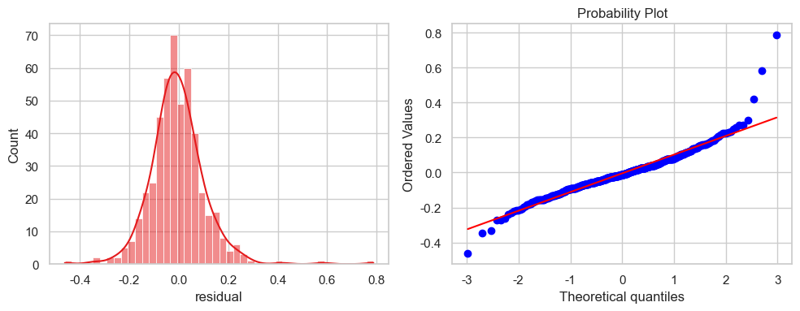
residuals[(residuals['residual'] < 0.2) & (residuals['residual'] >-0.2)].shape[0] / len(residuals)
0.9394572025052192
residuals['residual'].std()
0.11066593180150201
误差正态假设基本是成立的，在数据集中区域尤为明显。
残差在$[-0.2, 0.2]$的数据占比93%。 样本标准差为0.1，参数估计的话， 符合$2\sigma$内分布95%数据
那些离群点需要研究下,
离群#
找出这些离群点的共同特点，
Warning
由于没有version控制，notebook不能够反映思路：通过训练再去修改eda过程
根据probplot划分左右
与 #剔除异常行 配合
左侧#
都是预测值小于真实值！
residuals[residuals['residual'] < -0.3]
| residual | price | pred | |
|---|---|---|---|
| Id | |||
| 804 | -0.346820 | 582933 | 412094.131402 |
| 682 | -0.460682 | 159434 | 100579.438356 |
| 329 | -0.333022 | 214500 | 153743.842153 |
3个离散点，直接删除即可
右侧#
着重看下系数大于0的特征。neighborhood, totalsf
feature_coef_df[feature_coef_df['coef'] > 0].sort_values(by='coef', ascending=False).head(10)
| feature | coef | coef_abs | |
|---|---|---|---|
| 31 | numeric__TotalSF | 0.135101 | 0.135101 |
| 91 | categoric__Neighborhood_StoneBr | 0.088154 | 0.088154 |
| 75 | categoric__Neighborhood_Crawfor | 0.085541 | 0.085541 |
| 33 | ordianl__OverallQual | 0.076441 | 0.076441 |
| 179 | categoric__Functional_Typ | 0.076041 | 0.076041 |
| 73 | categoric__Neighborhood_ClearCr | 0.070117 | 0.070117 |
| 85 | categoric__Neighborhood_NridgHt | 0.058988 | 0.058988 |
| 84 | categoric__Neighborhood_NoRidge | 0.046653 | 0.046653 |
| 5 | numeric__LotArea | 0.046062 | 0.046062 |
| 163 | categoric__Heating_GasW | 0.045141 | 0.045141 |
hard_mask = (residuals['residual'] > 0.2)
hard_ids = residuals[hard_mask].index
hard_df = eda_data.loc[hard_ids, :]
hard_df.head()
| MSSubClass | MSZoning | LotFrontage | LotArea | Street | Alley | LotShape | LandContour | Utilities | LotConfig | ... | MoSold | YrSold | SaleType | SaleCondition | SalePrice | SalePrice_log | HasBsmt | HouseAge | TotalSF | HouseSF_PRODUCT_QUAL | |
|---|---|---|---|---|---|---|---|---|---|---|---|---|---|---|---|---|---|---|---|---|---|
| Id | |||||||||||||||||||||
| 706 | 190 | RM | 70.0 | 5600 | Pave | NaN | Reg | Lvl | AllPub | Inside | ... | 1 | 1970 | WD | Normal | 55000 | 10.915088 | 0 | 0 | 1092.000000 | 4368.000000 |
| 1388 | 50 | RM | 60.0 | 8520 | Pave | Grvl | Reg | Lvl | AllPub | Inside | ... | 1 | 1970 | CWD | Family | 136000 | 11.820410 | 1 | 0 | 2532.570883 | 15195.425298 |
| 1217 | 90 | RM | 68.0 | 8930 | Pave | NaN | Reg | Lvl | AllPub | Inside | ... | 1 | 1970 | WD | Normal | 112000 | 11.626254 | 0 | 0 | 1902.000000 | 11412.000000 |
| 790 | 60 | RL | NaN | 12205 | Pave | NaN | IR1 | Low | AllPub | Inside | ... | 1 | 1970 | WD | Normal | 187500 | 12.141534 | 1 | 0 | 2093.723832 | 12562.342995 |
| 561 | 20 | RL | NaN | 11341 | Pave | NaN | IR1 | Lvl | AllPub | Inside | ... | 1 | 1970 | WD | Normal | 121500 | 11.707670 | 1 | 0 | 1399.238497 | 6996.192484 |
5 rows × 85 columns
totalsf
sns.scatterplot(data=hard_df, x='TotalSF', y='SalePrice')
<Axes: xlabel='TotalSF', ylabel='SalePrice'>
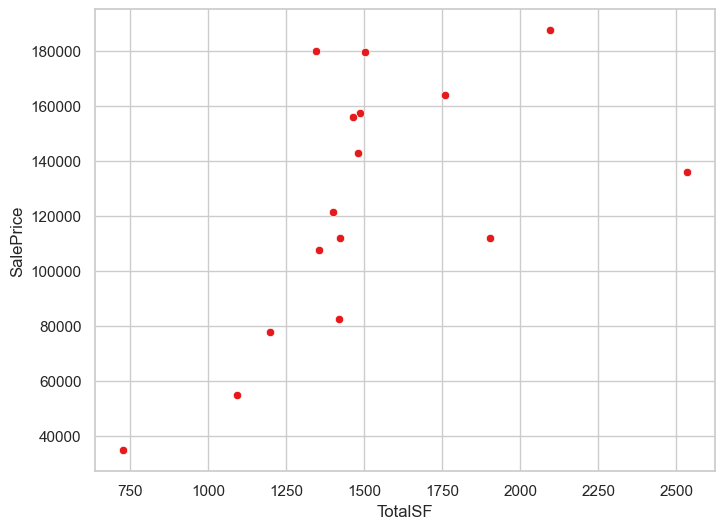
hard_df[hard_df['TotalSF'] > 2250]
| MSSubClass | MSZoning | LotFrontage | LotArea | Street | Alley | LotShape | LandContour | Utilities | LotConfig | ... | MoSold | YrSold | SaleType | SaleCondition | SalePrice | SalePrice_log | HasBsmt | HouseAge | TotalSF | HouseSF_PRODUCT_QUAL | |
|---|---|---|---|---|---|---|---|---|---|---|---|---|---|---|---|---|---|---|---|---|---|
| Id | |||||||||||||||||||||
| 1388 | 50 | RM | 60.0 | 8520 | Pave | Grvl | Reg | Lvl | AllPub | Inside | ... | 1 | 1970 | CWD | Family | 136000 | 11.82041 | 1 | 0 | 2532.570883 | 15195.425298 |
1 rows × 85 columns
saletype
hard_df['SaleType'].value_counts()
SaleType
WD 13
New 2
CWD 1
Name: count, dtype: int64
WD是最普通的方式，没什么问题
sns.boxplot(data=hard_df, x='SaleType', y='SalePrice')
sns.stripplot(data=hard_df, x='SaleType', y='SalePrice')
<Axes: xlabel='SaleType', ylabel='SalePrice'>
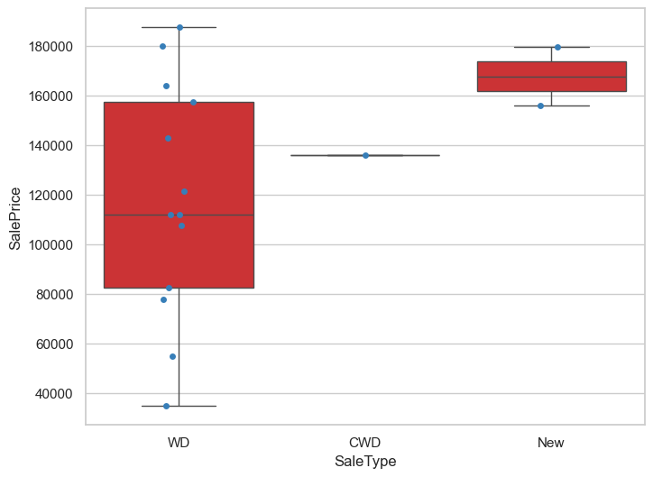
Neighborhood:StoneBr,NridgHt,Crawfor,NoRidge
plt.figure(figsize=(10,4))
sns.boxplot(data=hard_df, x='Neighborhood', y='SalePrice')
sns.stripplot(data=hard_df, x='Neighborhood', y='SalePrice')
<Axes: xlabel='Neighborhood', ylabel='SalePrice'>
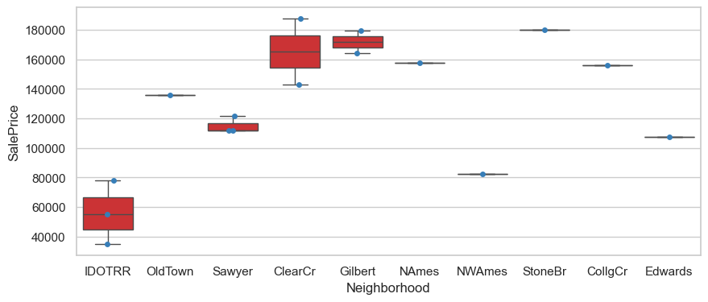
plt.figure(figsize=(20,4))
sns.boxplot(data=eda_data, x='Neighborhood', y='SalePrice')
sns.stripplot(data=eda_data, x='Neighborhood', y='SalePrice')
<Axes: xlabel='Neighborhood', ylabel='SalePrice'>
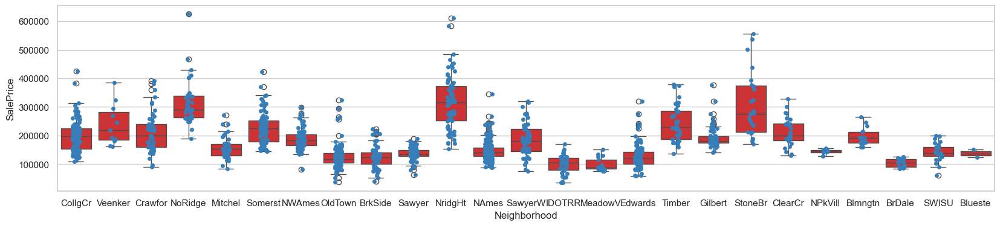
Functional_Typ
plt.figure(figsize=(10,4))
sns.boxplot(data=hard_df, x='Functional', y='SalePrice')
sns.stripplot(data=hard_df, x='Functional', y='SalePrice')
<Axes: xlabel='Functional', ylabel='SalePrice'>
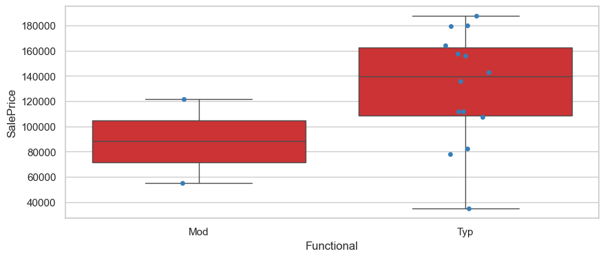
OverallQual
plt.figure(figsize=(10,4))
sns.boxplot(data=hard_df, x='OverallQual', y='SalePrice')
sns.stripplot(data=hard_df, x='OverallQual', y='SalePrice')
<Axes: xlabel='OverallQual', ylabel='SalePrice'>
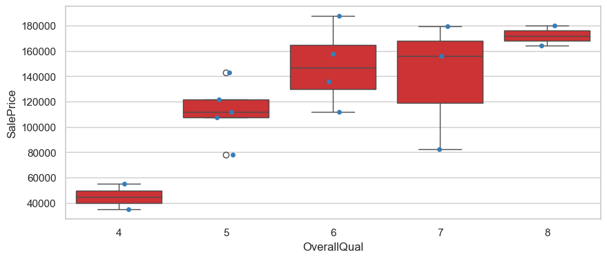
Exterior1st_BrkFace
plt.figure(figsize=(10,4))
sns.boxplot(data=hard_df, x='Exterior1st', y='SalePrice')
sns.stripplot(data=hard_df, x='Exterior1st', y='SalePrice')
<Axes: xlabel='Exterior1st', ylabel='SalePrice'>
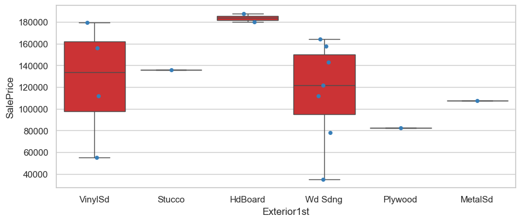
GrLivArea
sns.scatterplot(data=hard_df, x='GrLivArea', y='SalePrice')
<Axes: xlabel='GrLivArea', ylabel='SalePrice'>
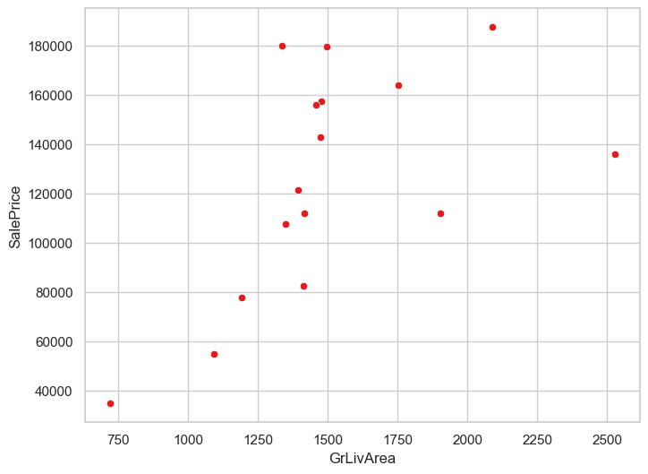
都没什么大问题，删除那个异常点试试
submit#
testdata.head()
| MSSubClass | MSZoning | LotFrontage | LotArea | Street | Alley | LotShape | LandContour | Utilities | LotConfig | ... | ScreenPorch | PoolArea | PoolQC | Fence | MiscFeature | MiscVal | MoSold | YrSold | SaleType | SaleCondition | |
|---|---|---|---|---|---|---|---|---|---|---|---|---|---|---|---|---|---|---|---|---|---|
| Id | |||||||||||||||||||||
| 1461 | 20 | RH | 80.0 | 11622 | Pave | NaN | Reg | Lvl | AllPub | Inside | ... | 120 | 0 | NaN | MnPrv | NaN | 0 | 6 | 2010 | WD | Normal |
| 1462 | 20 | RL | 81.0 | 14267 | Pave | NaN | IR1 | Lvl | AllPub | Corner | ... | 0 | 0 | NaN | NaN | Gar2 | 12500 | 6 | 2010 | WD | Normal |
| 1463 | 60 | RL | 74.0 | 13830 | Pave | NaN | IR1 | Lvl | AllPub | Inside | ... | 0 | 0 | NaN | MnPrv | NaN | 0 | 3 | 2010 | WD | Normal |
| 1464 | 60 | RL | 78.0 | 9978 | Pave | NaN | IR1 | Lvl | AllPub | Inside | ... | 0 | 0 | NaN | NaN | NaN | 0 | 6 | 2010 | WD | Normal |
| 1465 | 120 | RL | 43.0 | 5005 | Pave | NaN | IR1 | HLS | AllPub | Inside | ... | 144 | 0 | NaN | NaN | NaN | 0 | 1 | 2010 | WD | Normal |
5 rows × 79 columns
testdata.index
Index([1461, 1462, 1463, 1464, 1465, 1466, 1467, 1468, 1469, 1470,
...
2910, 2911, 2912, 2913, 2914, 2915, 2916, 2917, 2918, 2919],
dtype='int64', name='Id', length=1459)
preds = model_lasso.predict(testdata)
feature_features transformer done.
fix_map_encoder transformer done.
submit(testdata.index, preds.flatten(), name='lasso_baseline', feature_count= len(feature_coef_df))
| ID | SalePrice | |
|---|---|---|
| 0 | 1461 | 118348.668143 |
| 1 | 1462 | 170322.125056 |
| 2 | 1463 | 182666.123600 |
| 3 | 1464 | 205888.913258 |
| 4 | 1465 | 205860.298380 |
| ... | ... | ... |
| 1454 | 2915 | 86879.146192 |
| 1455 | 2916 | 80897.026129 |
| 1456 | 2917 | 173171.990091 |
| 1457 | 2918 | 110314.381332 |
| 1458 | 2919 | 222879.322699 |
1459 rows × 2 columns
得分0.13
至此，完成了最基本的训练、特征工程。得分与社区接近
提升得分的方式
引入非线性模型如xgboost，比如$0.7linear + 0.3xgboost$
试图找到更好的特征
一些问答#
最小化残差平方和
RSS估计\beta等价于 误差在正态分布假设下对参数进行极大似然估计。
多重共线性下(特征高度相关), 对
\beta的影响？
X_MATH = preprocessor.fit_transform(X_train)
feature_features transformer done.
fix_map_encoder transformer done.
X_MATH.shape
(972, 198)
np.linalg.matrix_rank(X_MATH)
172
可以看到在预处理下不是满秩的，这不符合基本线性模型假设。
这是因为one-hot时候，生成的0，1，会满足加和=1.
两种解决策略：
onehot
drop-first引入正则项(推荐)
lasso能做是因为加了一个L2正则项$\lambda$
l = lasso.alpha_
np.linalg.matrix_rank(X_MATH @ X_MATH.T + np.eye(len(X_MATH)) * l)
172
这是浮点计算的问题，l比较小，很多就会截断， 实际理论也是满秩的